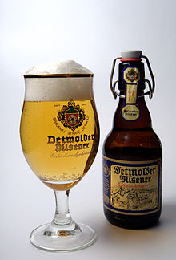

Welcome to SoftUni Beers!
Beer is the oldest and most widely consumed alcoholic drink in the world, and the third most popular drink overall after water and tea. Beer is brewed from cereal grains — most commonly from malted barley, though wheat, maize (corn), and rice are also used. uring the brewing process, fermentation of the starch sugars in the wort produces ethanol and carbonation in the resulting beer. Most modern beer is brewed with hops, which add bitterness and other flavours and act as a natural preservative and stabilizing agent. Other flavouring agents such as gruit, herbs, or fruits may be included or used instead of hops. In commercial brewing, the natural carbonation effect is often removed during processing and replaced with forced carbonation.